Orléans marks the high point of my trip, in that it's the furthest point north. Also, I get to install a new tire, and a new luggage rack! And, I think I've reached peak tacos.
Angers to Samur
Coming out of Angers, I noticed that the sidewall of my rear tire was coming apart. I guess they meant it when they said “max PSI 50” - with all the weight I'm carrying, I had been routinely inflating it to 4 or even 4.5 bar, which is like 58 to 65 PSI. Anyway, I made it to a bike shop! In Samur, there was this huge music and food festival.
 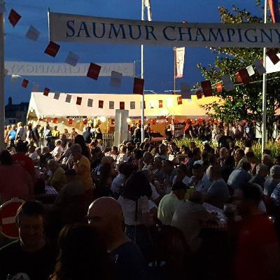
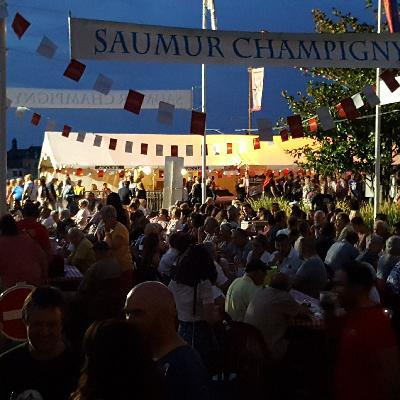
Samur to Tours
 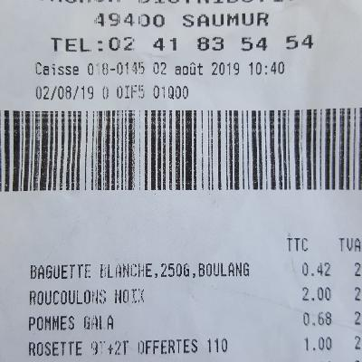
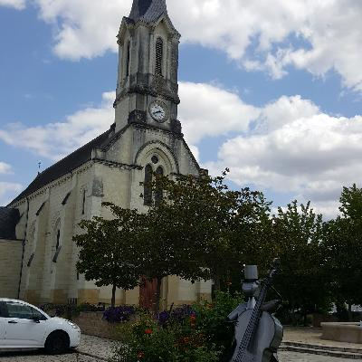
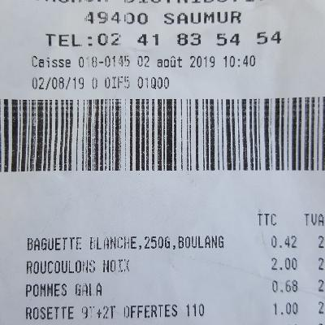
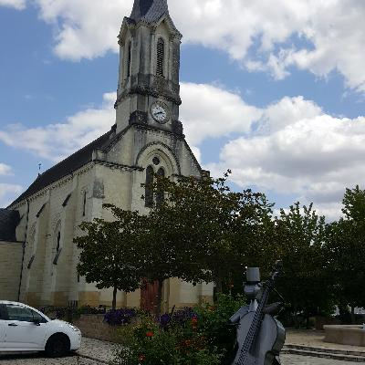

Tours
In Tours, I stayed with the wonderful Héléna, who works as a nurse. She has two awesome dogs. Tours is where I decided that France has reached peak tacos. You can get a tacos at KFC here, only one side of it is open. Weird! At another place, they have a 3 kg tacos (free if you eat all of it). I tells ya, France has reached peak tacos.

Tours to Blois
 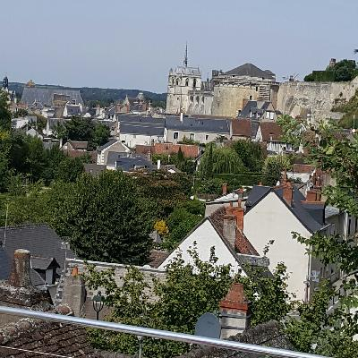
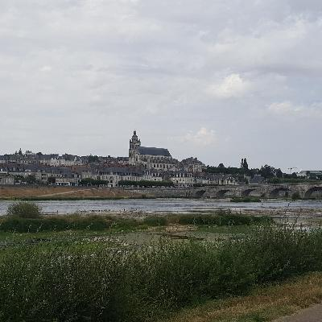
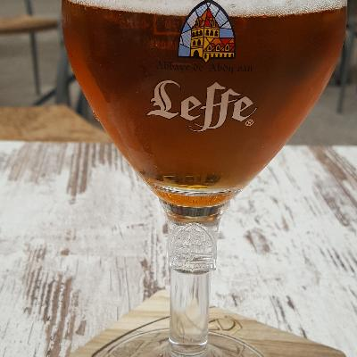
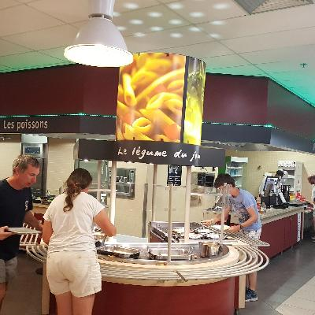
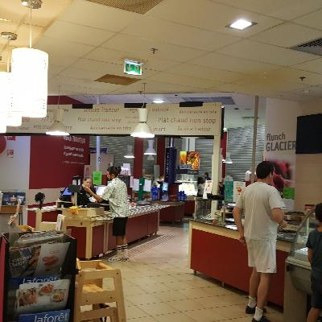
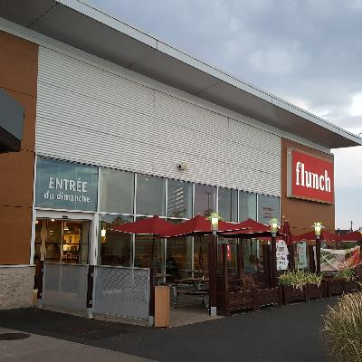
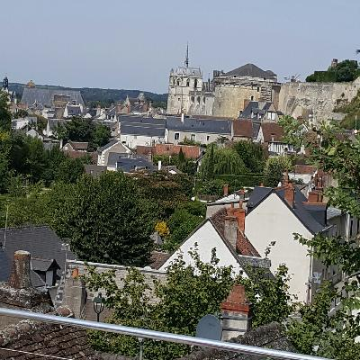
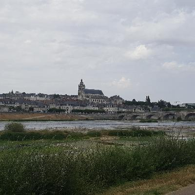
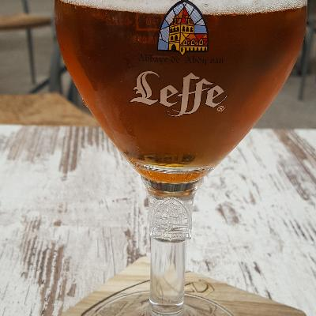
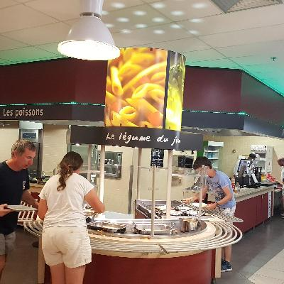
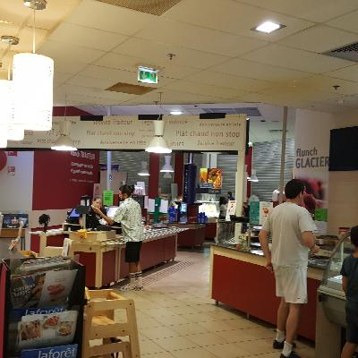
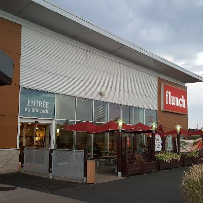
Orléans
Next, the high point of my trip, insofar as this is the furtherst north I go. Other than that, not so great. Leaving Tours, I noticed that my luggage rack had broken. I was able to cobble together a sort-of fix, but I had to stop a couple of times to re-do my fix. The truth is, normal bicycles just aren't meant to carry luggage. Bikes that are mean to carry luggage are specialized, and somewhat expensive. Anyway, with the rear wheel, the rear tire, and the luggage rack replaced with stronger units, I'm pretty sure I'll be OK the rest of the way.
Orléans is kind of a big city, and from where I was staying, the approach to the center was kind of ugly. I was also stressed from the not-yet-fixed luggage rack, admittedly. Coming at the town center from the direction of the train station the next day, it was actually quite pleasant.
Joan of Arc's house was destroyed in the bombing of 1940, and I think the city was basially flattened. In Gien, I found out who did the bombing – first the Germans, then (at least in the case of Gien), the French. Then, in 1944, we Americans bombed Orléans (and other parts of France).


 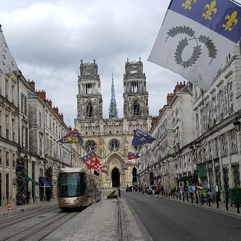
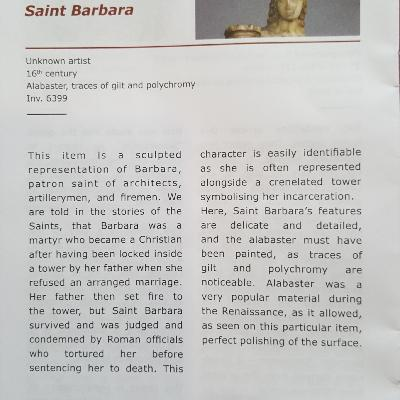
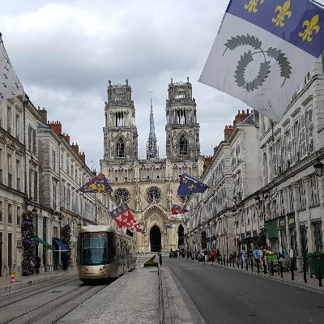
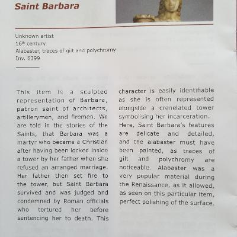
Orléans to Gien
Gien
Gien is neat. It's a lovely little town along the river, and it's not super touristy or gentrified. Actually, it's in a bit of a decline – the population went from 17,000 a few years ago to about 14,000 now, due to some factory closings. The town was pretty much flattened in 1940, first by the German airforce, and then by French artillery shooting at the Germans. Around 1950 it was rebuilt.
 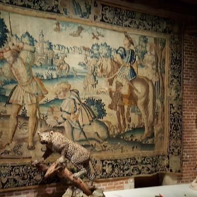
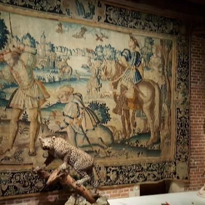
Up next
Here's my next several stops, mapped out. The first two are Orléans and Gien. I've arranged accommodation in all these places – yay! Airbnb thinned out, and normal bed and breakfasts and hotels are more affordable, and more available along here, so I'll be doing more of that. Also, I get to meet my friend Céline's mother!